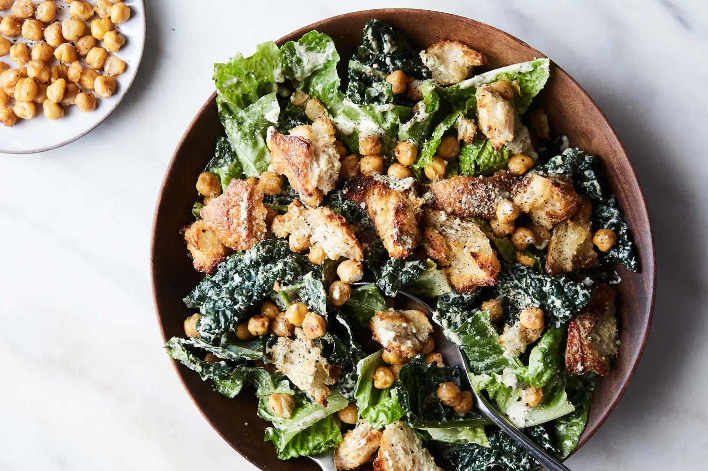

Vegan Caesar Salad With Crisp Chickpeas

Description
There are many ways to mimic the rich, creamy texture of emulsified, egg-based Caesar dressing: Tofu, vegan mayonnaise, aquafaba whipped with oil, the list goes on. Blended raw cashews prove themselves the best base in this version, which is fortified with garlic, mustard, miso paste and caper brine to achieve the tangy-salty-punchy balance found in the real deal. Crisp chickpeas and hand-torn croutons add a crunchiness that plays well with the velvety dressing.
Ingredients:
For the salad
- 0.5 small loaf crusty bread, such as sourdough, torn into 1-inch pieces (about 2 cups)
- 0.25 cup extra-virgin olive oil
- Kosher salt and freshly ground black pepper
- 1(14-ounce) can chickpeas, drained, rinsed and thoroughly dried
- 1large bunch lacinato kale, stems removed and roughly chopped into 1-inch pieces (about 4 cups)
- 1large head romaine lettuce, roughly chopped into 1-inch pieces (about 6 cups)
For the dressing
- 1cup whole (unroasted) cashews
- 1snack-size (2-by-3-inch) sheet roasted nori, crumbled (optional)
- 0.25cup nutritional yeast, plus more for serving
- 0.25cup fresh lemon juice (from 1 to 2 lemons)
- 3garlic cloves
- 2teaspoons brine from a jar of capers
- 1teaspoon Dijon mustard
- 1teaspoon white miso paste
- 0.75teaspoon kosher salt
- 0.5teaspoon freshly ground black pepper
Instructions:
- Heat the oven to 400 degrees. On a medium baking sheet, toss the bread with 2 tablespoons olive oil; season generously with salt and pepper. On a second baking sheet, toss the chickpeas with remaining 2 tablespoons oil; season generously with salt and pepper. Bake both until chickpeas and croutons are browned and crisp, stirring both halfway through, about 10 minutes for the croutons and 20 minutes for the chickpeas. Set aside.
- While the chickpeas and croutons roast, prepare your dressing: To a high-speed blender, add all the dressing ingredients, plus ¾ teaspoon kosher salt, ½ teaspoon pepper and ¾ cup water; blend until completely smooth, 3 to 4 minutes, scraping down the sides with a rubber spatula every now and again. Set dressing aside. (You should have 1½ cups).
- In a large bowl, add the kale and the dressing. Using your hands, massage the kale until slightly softened. Add the lettuce, croutons and half the roasted chickpeas; toss to coat and season to taste with salt and pepper. Sprinkle with additional nutritional yeast. Top with remaining roasted chickpeas; grind black pepper over, and serve immediately.
Source: NYTimes Cooking
Home